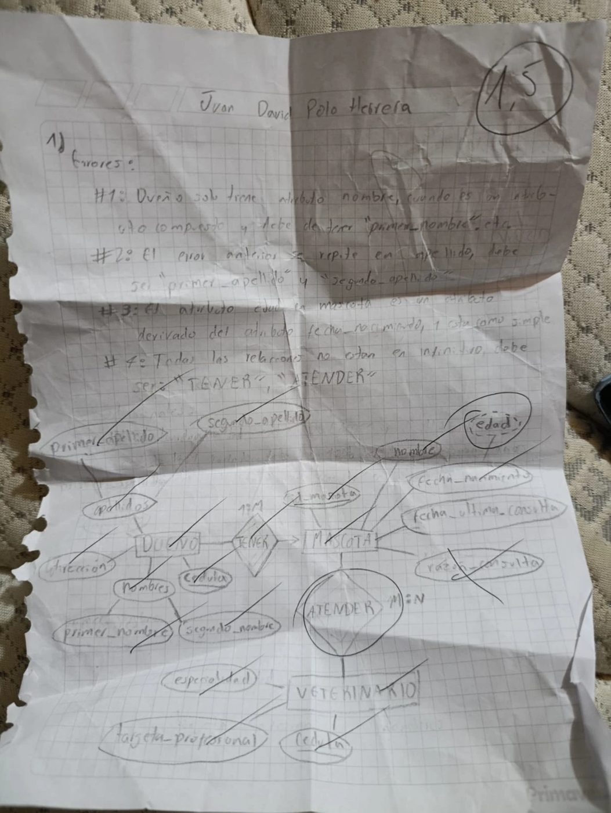

Quiz: modelo E-R de una veterinaria
Enunciado y contexto
El quiz presentaba el modelo E-R de una veterinaria con tres entidades: DUEÑO, MASCOTA y VETERINARIO. Un dueño tiene mascotas y los veterinarios atienden mascotas. La tarea era encontrar los errores de modelado, explicarlos y dibujar el modelo corregido a mano, en el tiempo de la clase.
- Una mascota pertenece a un solo dueño y un dueño puede tener varias mascotas (1:N).
- Una mascota puede ser atendida por varios veterinarios y un veterinario atiende muchas mascotas (M:N).
- Se guarda la fecha de nacimiento de la mascota; la edad se calcula a partir de ella.
Lo que entregué
Encontré cuatro errores:
- DUEÑO solo tenía el atributo nombre, cuando es compuesto: debe tener primer_nombre y segundo_nombre.
- Lo mismo con el apellido: primer_apellido y segundo_apellido.
- edad en MASCOTA es derivado de fecha_nacimiento y estaba como atributo simple.
- Las relaciones no estaban en infinitivo: deben ser TENER y ATENDER.

Hoja original del quiz. El profesor marcó ATENDER (M:N) y tachó razon_consulta.
Modelo revisado en draw.io
Al revisar la hoja con calma se ve lo que se me escapó: razon_consulta y la fecha de la consulta no son de la mascota. Describen el cruce MASCOTA–VETERINARIO, así que van como atributos de la relación M:N ATENDER. Con eso, fecha_ultima_consulta también sobra: sale del MAX de las fechas de consulta, o sea que sería un derivado.
Cargando modelo…
Esta versión es mi revisión posterior al quiz, no la que entregué en clase.
Reflexión
Me faltó agilidad mental para detallar el problema
Vi los errores evidentes (compuestos, derivado, nombres de relaciones), pero no alcancé a detallar el modelo completo en el tiempo del quiz. Muchas veces, a medida que avanzaba el ejercicio, iba corrigiendo detalles que debí ver desde el principio.
Los atributos de una relación M:N
Es justo el mismo error que después corregimos en el Taller 1 con CUADRILLA y EMBARQUE: si el dato describe el cruce de dos entidades, no puede ir en ninguna de las dos.
Lo que pulimos después
Con los talleres siguientes pulimos la habilidad de identificar entidades débiles, claves parciales y atributos de relación. Ahora antes de dibujar hago una pasada buscando eso: débiles, derivados, multivaluados y datos que viven en la relación.